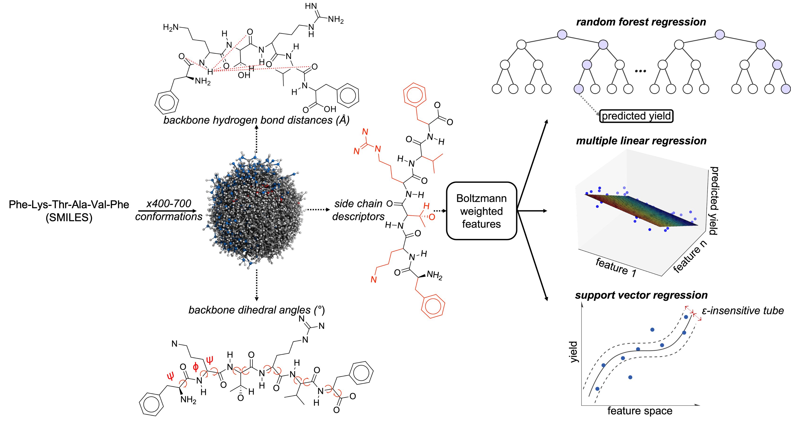

Project Overview
This project aims to predict the propensity at which a linear peptide will cyclize based on side chain features, dihedrals, and amide-amide distances. I've worked
on this project for about a year at the
OMO Computational Chemistry Lab at HMC. We focus on creating chemically intutive feature spaces to
aid in the design of cyclic peptides.
Languages and Libraries Used
- Languages: Python, Bash (shell)
- Core libs: scikit-learn, pandas, numpy, joblib, matplotlib, PyYAML
- Cheminformatics: RDKit (descriptors)
- External tools: Schrödinger Suite (Maestro + ConfGen/MacroModel) invoked via Bash for conformer search & minimization
Features
- Predicts peptide cyclization yield from conformational-ensemble descriptors.
- Automated conformer search: Bash scripts batch-run Schrödinger (Maestro/ConfGen/MacroModel) to generate & minimize conformers from SMILES; outputs are fed into the Python pipeline.
- Descriptors: backbone dihedrals, H-bond/amide–amide distances, side-chain geometry; Boltzmann-weighted ensemble averages.
- Models: Multiple Linear Regression, Random Forest, Support Vector Regression (cross-validated).
- Config-driven runs via
config.yaml; CLIs in main.py/app.py (Python) and Bash wrappers for Schrödinger jobs.
- Saved trained model (
RFR_model.joblib) and feature rankings (features_sorted.csv); plotting utilities in visualization.py.
Links
View on GitHub